Первая часть цикла статей, подробно рассказывающих о протоколе MIDI.
Почти с самого своего рождения протокол MIDI (Musical Instrument Digital Interface — цифровой интерфейс музыкальных инструментов) стал стандартом для всей электромузыкальной промышленности с невиданной до того степенью совместимости. Такой совместимости до сих пор нет даже у электрических лампочек, сетевых и телефонных розеток. Ситуация сейчас такова, что если выпускается электромузыкальное устройство, несовместимое с MIDI, оно обречено быть оторванным от остального мира.
Причина, по которой MIDI на протяжении двадцати лет имеет ошеломляющий успех, проста — протокол был очень тщательно разработан, прежде чем предстать перед публикой. В нем нет "дыр", а требования к аппаратной реализации и взаимодействию устройств четко определены и не могут быть трактованы двояко. Кроме того, MIDI не принадлежит одной компании, а является продуктом целой ассоциации производителей.
Основная предпосылка к появлению MIDI состояла в насущной потребности музыкантов того времени управлять с одной клавиатуры несколькими синтезаторами одновременно. При этом от разработчиков требовалось, чтобы соединение инструментов было простым, а сам интерфейс надежным и недорогим. Сейчас, по прошествии двадцати лет, можно уверенно заявить: эти условия для своего времени были выполнены разработчиками идеально.
Протокол MIDI разрабатывался как простое, недорогое и надежное средство для управления одним синтезатором с другого.
Это нужно вспоминать всякий раз, когда возникают вопросы и недоумения "а почему в MIDI это сделано именно так?". Тем более, вспоминать основное предназначение MIDI нужно перед тем, как критиковать протокол. А критиковали MIDI с самого его рождения и критикуют до сих пор, особенно по поводу слишком медленной передачи данных и ритмической неточности. Тем более в свете современных технологий. Достоинства и недостатки протокола, способы их преодоления и альтернативы MIDI — настолько обширная тема для обсуждения, что этому будет посвящена отдельная статья.
Несмотря на все недостатки, MIDI и сегодня вполне успешно выполняет свое предназначение. И не только — сфера применения протокола давно уже не ограничивается управлением синтезаторами. По MIDI управляются многие процессоры эффектов, микшерные пульты, даже осветительные, пиротехнические приборы и дымовые машины. Что уж говорить о персональных компьютерах и связанной с ними индустрии мультимедиа! Сейчас уже в порядке вещей скачать из интернета MIDI-файл в качестве звонка для мобильного телефона. Не удивлюсь, если в скором времени можно будет скачать MIDI-файл для управления кухонным комбайном…
Мир до MIDI
Середина 60-х — начало 70-х годов прошлого века были временем появления и бурного расцвета электромузыкальных инструментов. На сцене и в студии к уже широко используемым электрогитарам и электроорганам добавился принципиально новый тип музыкальных инструментов — синтезатор. Первые синтезаторы были очень сложны в настройке, перевозке и обслуживании, но они дали музыкантам то, что нельзя было получить никак иначе, — новые, свежие звуки.
Все синтезаторы тех лет были монофонические, то есть могли производить только одну ноту одновременно. Для воспроизведения нескольких звуков или музыкальных партий одновременно приходилось ухищряться. В сущности, были только два способа сделать это: либо использовать несколько синтезаторов (а в случае модульных синтезаторов покупать для каждого голоса отдельный генератор), либо записывать партию каждого голоса на многодорожечный магнитофон.
Синтезаторы в то время были полностью аналоговые, все внутренние их блоки (звуковые генераторы, генераторы огибающей, фильтры) управлялись напряжением. Например, звуковой генератор инструмента при подаче напряжения в 1 В мог давать высоту тона 100 Гц, 2 В — 200 Гц, 3 В — 400 Гц и так далее. Очевидно, что для внешнего управления таким прибором мог использоваться только аналоговый интерфейс. Он имел название CV/Gate. На вход CV подавалось управляющее напряжение (Control Voltage), пропорциональное высоте ноты, на вход Gate — импульс (trigger), от которого стартовала и выключалась нота.
Существовало несколько вариантов CV/Gate-интерфейса. Наиболее широко использовался вариант, предложенный фирмой Roland. В нем CV-напряжение увеличивалось на 1 В при увеличении высоты тона на октаву. Gate-сигнал, называемый Voltage Trigger (V-Trigger), представлял собой положительный импульс с шириной, равной времени удержания ноты в нажатом состоянии. Этот вариант наряду с Roland использовали в своих инструментах фирмы Sequential Circuits и ARP. В синтезаторах Moog использовался другой тип Gate-сигнала, который назывался S-Trigger. Существовали инструменты и с другими параметрами CV/Gate-сигналов. Часто управляющее напряжение изменялось по закону 1,2 В на октаву.
Применялся также сигнал под названием Trigger, представлявший собой короткий импульс. Многие синтезаторы с арпеджиатором имели специальный вход для таких сигналов (clock input). Как только на вход поступал импульс, запускалась очередная нота арпеджио. Генерировали сигнал Trigger многие драм-машины и аналоговые секвенсоры (чаще всего каждую 8-ю или 16-ю ноты, но иногда расстояние между импульсами можно было задавать произвольно). Сигнал Trigger мог быть подан и на вход Gate синтезатора.
Главный недостаток CV/Gate-интерфейса состоял в том, что с помощью него в каждый момент времени можно было управлять извлечением только одной ноты. Для полифонических инструментов необходимо было столько CV/Gate-интерфейсов, сколько голосов полифонии имел инструмент. Кроме того, информация о действиях исполнителя в CV/Gate-системах весьма скудная, практически — это только высота взятой ноты и сам факт ее взятия/снятия.
В середине 70-х компания Oberheim выпустила первый доступный по цене полифонический синтезатор Two Voice. Инструмент был прост в использовании, имел встроенную клавиатуру, полифонию в два голоса и несложный набор органов управления, с помощью которых можно было быстро создавать красивые, богатые звуки. Инструмент имел, в отличие от своих предшественников, небольшие размеры и простой способ программирования. Вскоре после этого начали появляться полифонические инструменты других фирм: Sequential Circuits, Yamaha, Moog, Roland, ARP. Они стали очень популярны в растущей массе электронных музыкантов.
После полифонии, следующим наиболее важным нововведением стала программируемая память. В синтезаторе появился небольшой компьютер, который позволял сохранить в памяти инструмента положение всех ручек и кнопок на передней панели, что открыло новые возможности для живого исполнения. Кроме того, компьютер отслеживал нажатия клавиш и передавал высоту взятых нот на звуковые генераторы. Это как раз и позволило в дальнейшем применить цифровые интерфейсы управления.
До появления памяти каждый инструмент нужно было программировать заранее, а во время концерта он мог производить только один звук. Поэтому на концертах таких музыкантов, как Keith Emerson и Rick Wakeman, можно было увидеть огромные "стеллажи" из клавиатур. Для подготовки всего этого добра к концерту и объединения в рабочий ансамбль требовались часы работы. Когда память стала доступна, один инструмент мог быть запрограммирован на несколько звуков, а нужный звук выбирался нажатием одной кнопки прямо во время концерта.
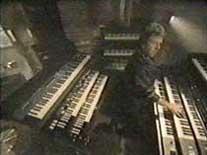 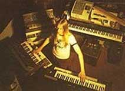
Но сколько разных синтезаторов — столько характеров. Одни производили замечательные звуки трубы, другие — звуки струнных, третьи — спецэффекты. Музыкантам хотелось взять лучшее с каждого инструмента и получить единую, прекрасно звучащую систему.
В то время была распространена техника игры на двух клавиатурах одновременно, что позволяло создавать многослойные звуки. Например, одну и ту же партию можно было играть обеими руками, правой рукой на инструменте, который силен в струнных, левой — на инструменте с прекрасной секцией медных духовых. Это было довольно сложно, разрабатывалась даже своя техника игры под систему из конкретных моделей синтезаторов.
Все эти приемы служили одной цели — выжать максимум из новых инструментов. Наслоение звуков различных синтезаторов стало одним из исполнительских приемов, визитной карточкой многих музыкантов того времени.
В конце 70-х годов в синтезаторах начала широко применяться цифровая электроника, что было вызвано удешевлением микропроцессоров и массовым производством интегральных схем. Многие блоки синтезаторов было выгоднее производить из компактных, дешевых и более стабильных во времени цифровых компонентов. Естественно, вопрос об управлении инструментами возник с новой силой: аналоговые CV/Gate интерфейсы совсем уже не подходили под новые цифровые технологии формирования звука. В результате, в начале 80-х синтезаторы стали оснащаться цифровым интерфейсом.
Появились такие инструменты, как Oberheim OB-X (1981) и Rhodes Chroma (1982), которые могли быть подсоединены к другому инструменту той же модели и фирмы. Например, Oberheim OB-X можно было подключить к другому Oberheim OB-X (всего до трех инструментов одновременно). Когда музыкант играл на клавиатуре одного из них, оба инструмента звучали одновременно. Это был огромный прогресс — ведь для получения многослойных звуков можно было играть на одной клавиатуре. Однако главная проблема по-прежнему не была решена: как соединить друг с другом инструменты разных производителей и разных моделей.
Herbie Hancock, например, пытался решить этот вопрос собственными силами. Он дорабатывал свои синтезаторы цифровыми интерфейсами, выполненными на заказ. И они работали!
В то же время все больше и больше музыкантов обращалось к производителям синтезаторов с просьбой сделать для них собственный цифровой интерфейс. Масло в огонь подлило и появление первых цифровых секвенсоров, таких как Roland MC 4 Micro Composer и Oberheim DSX. Если бы инструменты разных производителей были совместимыми, музыкант мог бы "забить" партии в эти секвенсоры, а потом воспроизвести, используя целую группу синтезаторов. Но, увы...
Незадолго до появления MIDI фирма Roland разработала цифровой интерфейс DCB, который использовался только в двух синтезаторах (Juno 60 и Jupiter 8) и секвенсоре MSQ 700. Интерфейс DCB обеспечивал базовые возможности по извлечению звуков посредством команд взятия и снятия ноты.
Нужно отметить, что наряду с попытками соединения синтезаторов друг с другом, еще в 60-х годах предпринимались попытки подключения синтезатора к компьютеру. Но они не приводили к заметным практическим результатам из-за колоссальной стоимости компьютеров. В конце 70-х — начале 80-х существовало несколько несовместимых между собой интерфейсов, производимых кустарно или мелкими фирмами. Только разработчик такой компьютерной системы мог написать программное обеспечение для нее. Обычно подобные системы создавались путем добавления в компьютер специальных плат, которые либо напрямую генерировали звук (сравните с современными виртуальными синтезаторами!), либо генерировали несколько каналов управляющего напряжения для модульных синтезаторов.
Рождение MIDI
Итак, к началу 80-х годов прошлого века потребность создания универсального интерфейса была осознана многими ведущими производителями. Задача стояла такая: разработать стандарт передачи действий исполнителя в цифровой форме между всеми типами электромузыкальных инструментов. Первый обмен мнениями на эту тему, в котором участвовали Ikutaro Kakehashi (президент Roland), Tom Oberheim (Oberheim) и Dave Smith (президент Sequential Circuits), произошел в июне 1981 года на выставке NAMM.
Dave Smith начал работу с изучения литературы по компьютерным сетям. При разработке сетевых протоколов составлялись две спецификации — аппаратного соединения устройств и формата передаваемых по сети сообщений. При этом внутренняя работа компьютера оставалась обособленной, он представлялся для других участников сети чем-то вроде "черного ящика", который реагировал на сообщения в соответствии со стандартом. Такой подход был выбран и для соединения музыкальных инструментов. В результате удалось избежать зависимости языка общения инструментов от их устройства. Это основной принцип MIDI, и он остался с тех пор неизменным. Именно благодаря ему протокол продолжает свою непомерно долгую, по компьютерным меркам, жизнь.
К осени 1981 года Smith подготовил первую версию своего протокола под названием USI (Universal Synthesizer Interface). В октябре того же года на выставке в Японии произошла встреча представителей фирм Sequential, Roland, Korg, Yamaha и Kawai, на которой USI была представлена японцам, а в ноябре на конгрессе AES в Нью-Йорке Dave Smith официально представил спецификацию. Японские производители работали в то время над собственным стандартом, который был сложнее USI.
В январе 1982 года на выставке NAMM фирма Sequential Circuits организовала встречу, которую посетили большинство производителей синтезаторов. На встрече выяснилось, что остальные американские компании по разным причинам не хотят участвовать в создании единого интерфейса. После встречи, Sequential Circuits и японские фирмы (Roland, Korg, Yamaha, Kawai) решили продолжать совместную работу независимо от остальных. Пять месяцев спустя, на июньской выставке NAMM были представлены плоды этой международной разработки. Пришло время для официального названия интерфейса. USI было отвергнуто, поскольку слово "universal" (универсальный, всеобщий) могло вызвать юридические проблемы. Японцы предложили UMII (Universal Music Instrument Interface). Но поскольку это название также содержало слово "universal", Dave Smith предложил исправить его на MIDI, с чем все и согласились.
В октябре 1982 года была закончена предварительная спецификация MIDI. В декабре вышел Sequential Circuits Prophet 600 — первый синтезатор, оборудованный MIDI-интерфейсом. А в январе 1983 года на выставке NAMM произошло соединение Prophet 600 и Roland Jupiter 6 по MIDI. В марте появился Roland JX 3 P, а в июне — Yamaha DX 7.
До появления MIDI синтезаторы состояли из двух компонентов в "одном флаконе". Первый компонент — система звукообразования, которая фактически производила звук. Второй компонент — контроллер, обычно клавиатура, которая служила для преобразования действий исполнителя в напряжение и ток, то есть в язык, понятный первому компоненту. Этому процессу даже придумали имя — "захват исполнительских штрихов".
Протокол MIDI сделал различие между двумя компонентами явным, по сути — разорвал их взаимосвязь. Теперь любой контроллер мог управлять любым звуковым генератором. Это имело огромное психологическое значение — музыкант мог свободно подбирать необходимое оборудование, без боязни, что оно устареет через полгода, как это происходит с другими электронными устройствами.
Хотя фирмы совместно работали над MIDI, на рынке они по-прежнему являлись конкурентами. Поэтому некоторые фирмы добавляли собственные спецификации к MIDI, в отдельных случаях неверно интерпретируя существующие параметры (как по недоразумению, так и умышленно), в то время как все не связанные с MIDI компании критиковали этот интерфейс. В то же время фирмы, связанные с MIDI, не могли раскрыть конкурентам все тайны. Например, Sequential Circuits планировали выпуск мультитембрального инструмента (Six-Trak) и предлагали внести необходимые для этого возможности в спецификации, но меньше всего хотели, чтобы об их планах узнали японские производители.
Тем не менее, было необходимо скоординировать работы по MIDI инструментам, и в середине 1983 года в Японии был сформирован комитет по MIDI-стандартам (JMSC). В августе того же года была обнародована спецификация MIDI 1.0. Также в 1983 году была сформирована международная группа пользователей MIDI (IMUG — International MIDI Users Group), которая впоследствии превратилась в IMA — международную MIDI-ассоциацию. Однако она представляла пользователей, а не производителей, и не могла оказывать на них серьезное влияние. Поэтому в июне 1984 года была сформирована ассоциация MIDI-производителей (MMA — MIDI Manufacturers Association).
Организации MMA и JMSC совместно занимаются всей деятельностью по стандартизации и расширению протокола MIDI. Любой зарегистрированный член этих организаций может предложить свое дополнение в протокол, после чего оно будет вынесено на голосование.
1983 — 2003
Протокол MIDI открыл огромные возможности компьютерного синтеза и управления звуком. Компьютеры начали использоваться в качестве средства управления синтезаторами (в качестве секвенсора или программы-композитора, производящей управляющие воздействия на основе специальных алгоритмов).
В 1984 году Jim Miller выпустил программу Personal Composer для IBM PC, которая представляла собой MIDI-секвенсор и позволяла распечатывать ноты. Фирмы Passport Designs и Sequential Circuits представили четырех- и восьмидорожечные программы-секвенсоры для компьютеров Apple II и Commodore 64. Фирма Roland выпустила гитарный MIDI-контроллер GR 700, а также синхронизатор и SMPTE-интерфейс SBX 80, который произвел революцию в деле синхронизации драм-машин и секвенсоров с аналоговыми магнитофонами. Yamaha представила цифровую задержку D 1500 — первый процессор эффектов, пресеты которого можно было менять посредством MIDI-сообщения Program Change. В приборе Emulator II фирмы Emu впервые сочетаются MIDI-, SMPTE- и компьютерное управление.
1985 год ознаменовался захватом европейского рынка компьютерами Atari, имеющими встроенные MIDI-порты. Фирмы MOTU и Opcode выпускают программные MIDI-секвенсоры под Macintosh. В это же время Yamaha разрабатывает аппаратный секвенсор QX 1 с памятью на 80000 нот и возможностью редактирования списка MIDI-событий. В следующем году компьютеры PC начинают завоевывать рынок. Для PC появляется множество программ, использующих MIDI. Фирма Lexicon выпускает ревербератор PCM 70 — первый процессор эффектов, параметрами пресетов которого можно управлять по MIDI.
Сам протокол также не стоит на месте. Разработанный с учетом на дальнейшее расширение, он пополняется новыми возможностями. В марте 1987 года добавлен MIDI Time Code (синхросигнал для взаимодействия MIDI-устройств с магнитофонами и другим оборудованием, работающими с таймкодом SMPTE), в мае 1987 — Sample Dump Standard (протокол передачи семплов по MIDI). В декабре 1988 появляется сообщение Reset all controllers (обнулить все контроллеры), в апреле 1990 — сообщение Bank Select (выбор банка).
В 1990 году фирма Opcode выпускает MIDI-аудиосеквенсор Studio Vision для Macintosh, а также программу Galaxy — универсальный редактор/библиотекарь MIDI-устройств. В мае 1991 протокол пополняется сообщением All sounds off (снять все звуки), в июле 1991 — командами управления световыми и пиротехническими приборами MIDI Show Control, а также форматом стандартных MIDI-файлов (SMF — Standard MIDI Files) для платформо-независимого хранения и обмена данными секвенсоров. В октябре 1991 появляется стандарт General MIDI, в котором определены некоторые минимальные требования к GM-совместимым устройствам и названия звуков закреплены за номерами пэтчей. Появляется и первый GM-совместимый звуковой модуль Roland SC 55 Sound Canvas. Фирма Opcode выпускает MIDI-расширение OMS (Opcode Music System) для операционной системы компьютера Macintosh.
В декабре 1991 выходит MIDI Tuning Specification — способ тонкого управления строем инструментов. В январе 1992 протокол MIDI окончательно интегрируется в студию звукозаписи — появляется стандарт MIDI Machine Control, который позволяет управлять по MIDI транспортными функциями записывающих устройств.
С приходом Microsoft Windows 3.1 у пользователей PC появляется поддержка MIDI на уровне операционной системы. Выходит программа Cakewalk для Windows, программа Cubase, ранее выпускавшаяся для Atari и Macintosh, становится доступна на PC. 1993 год — начало бума мультимедиа. Для PC появляются звуковые платы с MIDI-интерфейсом. MIDI-технология активно эксплуатируется в двух секторах рынка: профессиональном и любительском.
Начинают свое развитие виртуальные студии на базе персонального компьютера. Виртуальные синтезаторы, процессоры эффектов и другие программы взаимодействуют по MIDI с внешним миром (и даже друг с другом, внутри одного компьютера, соединяясь виртуальным MIDI-кабелем).
В мае 1996 года выходит спецификация Downloadable Sounds (DLS) Level 1, которая позволяет дополнять собственными звуками наборы имеющихся в устройстве пэтчей General MIDI.
За последние пять лет организация MMA выпустила более десятка новых спецификаций. Январь 1998 — SMF Lyrics Specification (текст к песням в стандартных MIDI-файлах), январь 1999 — MIDI Tuning Bank and Dump Extensions (новые сообщения для тонкой подстройки инструментов) и спецификация DLS Level 1 версии 1.1, июнь 1999 — SMF Language and Display Extensions (хранение и отображение символов в MIDI-файлах), сообщения SMF Device Name and Program Name (воспроизведение MIDI-файла на нескольких устройствах одновременно), ноябрь 1999 — General MIDI 2.
В феврале 2000 года предложен новый формат RMID, который позволяет объединить в одном файле данные стандартного MIDI-файла и DLS-файла. В октябре 2000 – MIDI Media Adaptation Layer for IEEE-1394 (способ передачи MIDI-сообщений по протоколу FireWire), в августе 2001 – спецификация DLS Level 2.1, в ноябре 2001 – General MIDI Lite (для мобильных применений и портативных устройств), а также спецификация XMF (eXtensible Music Format), которая предлагается взамен формата RMID.
Последним дополнением (май 2002) является Scalable Polyphony MIDI Specification — способ, позволяющий воспроизводить один и тот же MIDI-файл максимально корректно вне зависимости от доступной полифонии.
Несмотря на все эти добавления, MIDI спецификация по-прежнему имеет версию 1.0.
Основы
MIDI — это протокол связи между устройством управления, генерирующим команды, и подчиненным устройством, выполняющим эти команды. Если очень сильно сузить это определение, то можно привести типичный пример: MIDI позволяет исполнителю нажать клавишу на одном инструменте, а получить при этом звук другого или даже нескольких. Любые воздействия исполнителя на органы управления (нажатие клавиш, педалей, изменение положений регуляторов и т. п.) могут быть преобразованы в команды, которые можно передать по MIDI-кабелю на другие инструменты. Эти инструменты, получая команды, обрабатывают их так же, как и при воздействии на их собственные органы управления.
На самом деле протокол MIDI не конкретизирует состав взаимодействующих устройств и не требует наличия живого исполнителя. Суть протокола в том, что в некой системе, состоящей из нескольких устройств, одно устройство (мастер) генерирует команды управления, а все другие устройства (подчиненные) выполняют эти команды. Если подчиненные устройства являются источниками звука (синтезаторы, звуковые модули, семплеры, драм-машины, одним словом, тон-генераторы), то они управляются командами, связанными со звукообразованием: например, "взять ноту До первой октавы" или "переключить тембр на номер 5". Если подчиненные устройства выполняют другие функции, например, обработку аудиосигнала, то и команды для них будут несколько иными. Как бы там ни было, прибор, получает команды управления через свой MIDI-вход (MIDI In).
В качестве мастер-устройства может выступать любой прибор, имеющий MIDI-выход (MIDI Out) и способный посылать на этот выход команды управления. Мастер-устройства можно разделить на два типа: устройства, на которые непосредственно воздействует исполнитель (например, синтезатор) и устройства, которые генерируют управляющие команды автоматически (без участия исполнителя), на основе ранее введенных данных. Типичным примером устройства последнего типа является секвенсор.
Секвенсор напоминает магнитофон, только записывает он не звук, а команды управления, и не на ленту, а в память компьютера (в широком смысле слова, это может быть и встроенный компьютер синтезатора). Секвенсор позволяет записать действия исполнителя (включая динамику исполнения, стиль, штрихи и т. п.), а затем воспроизвести их в первозданном виде, точно так же, как если бы исполнитель снова сел за инструмент и сыграл то же самое. Кроме того, в секвенсоре можно редактировать записанную информацию способами, невыполнимыми на магнитофоне: транспонировать партии или отдельные ноты, изменять ритмическую позицию событий или тембр, которым синтезатор будет воспроизводить партию.
Протокол MIDI разрабатывался для управления синтезаторами, а в них, как известно, самый главный орган управления — клавиатура. Неудивительно поэтому, что разработчики MIDI для описания действий исполнителя выбрали принцип клавишного инструмента.
MIDI является выраженным клавишно-ориентированным протоколом.
Это не означает, что управлять тон-генератором можно только с клавиатуры — существуют множество других способов ввода, например, электронные пэды и целые ударные установки, гитарные или духовые контроллеры (о них мы поговорим отдельно и более подробно). Однако, какое бы средство ввода не использовалось, сообщения от него преобразуются в клавишно-ориентированные.
Приемы звукоизвлечения, нехарактерные для клавишного инструмента, могут быть лишь сымитированы средствами MIDI с той или иной степенью достоверности.
Коммутация
Как же соединяются устройства в MIDI? Представим себя на месте разработчиков. У нас есть два синтезатора, и мы хотим, чтобы при нажатии клавиши на одном из них второй синтезатор сыграл ту же ноту, но своим звуком. Очевидно, для этого нужно сделать на первом синтезаторе выходной MIDI-разъем, а на втором — входной MIDI-разъем и соединить инструменты MIDI-кабелем. Первый синтезатор при нажатии клавиши должен генерировать сообщение о взятии ноты и посылать его на свой выход, а второй синтезатор — получать это сообщение через вход и воспроизводить звук (рис. 3).
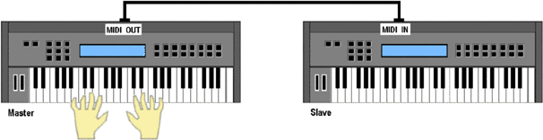
А что будет, если играть аккордами? В прошлом для одновременного извлечения нескольких звуков нужно было бы встраивать в инструмент несколько CV/Gate входов, по одному на каждый голос полифонии. Но MIDI — протокол цифровой, и высота нот кодируется цифрами, а не напряжением. Цифры передаются по MIDI кабелю в виде очень коротких импульсов. Разработчики могли сделать параллельный интерфейс, то есть передавать эти импульсы по нескольким проводам одновременно. Тогда MIDI-кабель мог бы состоять, например, из восьми или шестнадцати проводов, а инструмент получал бы все ноты аккорда одновременно. Но в силу разных причин (о которых поговорим далее подробно) было решено сделать интерфейс последовательным. В этом случае для MIDI-кабеля нужно всего два провода в экране-оплетке.
Последовательный интерфейс означает то, что импульсы по MIDI-кабелю передаются один за другим, подобно отряду муравьев, шагающих колонной по одному. Так что в каждый момент времени приемника достигает только один импульс. Значит, передать одновременно несколько сообщений через один MIDI-разъем невозможно. При игре аккордов ноты каждого аккорда будут передаваться последовательно. Фактически, вместо аккордов синтезатор-приемник будет исполнять только очень-очень плотное арпеджио.
По одному MIDI-кабелю одновременная передача нескольких сообщений невозможна.
Этот факт служит одним из главных аргументов в устах людей, критикующих протокол. На слух запаздывание каждой последующей ноты аккорда неуловимо (так как составляет менее половины миллисекунды), да и к тому же в реальной жизни ни один исполнитель не сыграет аккорд, абсолютно одновременно взяв все его ноты. Однако это не многих успокаивает — все-таки гораздо лучше иметь точную во времени систему.
Итак, мы соединили два синтезатора MIDI-кабелем, по которому передаются сообщения о взятии нот (в том числе и нескольких одновременно, с поправкой на предыдущее замечание). Теперь мы хотим подключить еще два синтезатора, но управлять ими по-прежнему с первого. Для этого можно сделать в первом синтезаторе несколько MIDI-выходов и соединить их тремя MIDI-кабелями с MIDI-входами остальных, то есть, говоря компьютерным языком, организовать сеть с топологией "звезда" (рис. 4).
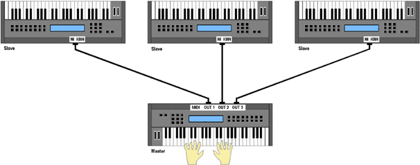
Это вполне возможно, но не все инструменты (хотя бы по экономическим соображениям) будут оборудоваться несколькими MIDI-выходами. А если потребуется управлять еще двумя или тремя синтезаторами, то выходов точно не напасешься. Было найдено решение: сделать дополнительный разъем MIDI Thru (сквозной). Задача синтезатора, оборудованного таким разъемом — дублировать на него все сообщения, приходящие на вход MIDI In. Тогда нашу систему из четырех синтезаторов можно соединить цепочкой (рис. 5).
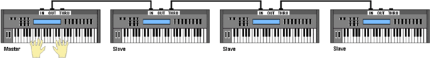
При этом на первом синтезаторе нужен всего один MIDI-выход. Вся информация с этого выхода поступает на MIDI-вход второго синтезатора, дублируется через его сквозной разъем MIDI Thru и далее, по второму MIDI-кабелю, попадает на MIDI-вход третьего инструмента, дублируется, и так до тех пор, пока не достигнет последнего инструмента в цепочке.
Все это хорошо, но как быть, если мы хотим, чтобы каждый инструмент играл по очереди, а не со всеми сразу? Предположим, на первом синтезаторе выбран тембр флейты, на втором — рояля, на третьем — бас-гитары, а на последнем — ударных. Мы нажимаем клавиши на первом инструменте и хотим для начала только рояль, затем только ударные. Конечно, можно бегать и на ходу подключать и отключать нужный синтезатор (что полезно для собственного физического развития), но это не выход, особенно, если приборы соединены цепочкой.
А если мы хотим играть левой рукой партию баса, а правой — рояля? В этом случае клавиатура первого синтезатора должна быть разделена на две зоны. Клавиши из каждой зоны должны посылать сообщения о взятии ноты своему инструменту. Как это сделать, если инструмент оборудован только одним MIDI-выходом?
И, наконец, если наш синтезатор мультитембральный (то есть способен воспроизводить несколько партий одновременно разным тембром), как осуществить его коммутацию с секвенсором, в котором записаны эти партии?
На поставленные вопросы, в сущности, ответа два: либо использовать столько MIDI-входов, выходов и кабелей, сколько партий звучит одновременно (рис. 6, а), либо... Сделать так, чтобы все партии передавались по одному MIDI-кабелю (рис. 6, б). Нужно ли пояснять, почему был выбран второй вариант?!
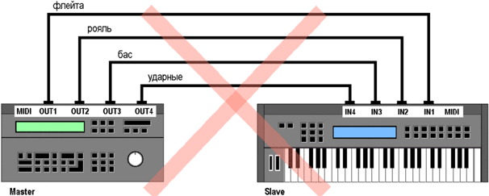
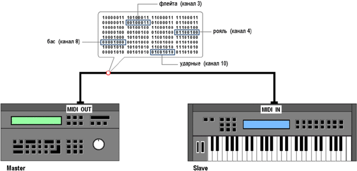
Разработчики предложили передавать данные по шестнадцати логическим каналам. Слово "логический" означает то, что все каналы существуют в виде абстракции и передаются по одному MIDI-кабелю. Просто каждое сообщение, например, о взятии ноты, снабжается дополнительным числом — номером канала, на котором звучит нота. В этом коренное отличие MIDI от аналоговой звуковой коммутации, где, например, партия рояля идет с магнитофона на микшер по отдельному кабелю, который можно потрогать руками. В MIDI по одному кабелю могут передаваться одновременно партии всего симфонического оркестра (естественно, в виде управляющих команд, а не звука).
Понятно, что при последовательной передаче в каждый момент времени приемника будет достигать сообщение только для одного канала. Так что абсолютной ритмической согласованности в игре, например, бочки и бас-гитары при передаче данных по одному MIDI-кабелю добиться нельзя. Но опять же, покажите басиста, который идеально "попадает" в бочку барабанщика. Многих критиков протокола подобные фразы не утешают, хотя разница в приходе сообщений практически неощутима — все в том же порядке долей миллисекунды.
Каждый тон-генератор может быть настроен на прием сообщений по одному или нескольким MIDI-каналам. Данные тех каналов, по которым прием не идет, просто игнорируются. В нашем примере пусть первый синтезатор играет на MIDI-канале 3, второй настроен на прием по каналу 4, третий — по каналу 8 и последний — по каналу 10. Тогда для переключения тембров нужно переключать каналы, по которым передает информацию первый синтезатор: включили на канал 3 — звучит его же флейта, на канал 8 — бас с третьего синтезатора, на канал 10 — барабаны с последнего. Но тогда клавиатуры на втором, третьем и четвертом синтезаторах вообще не нужны. Это соображение привело к широкому распространению звуковых модулей — синтезаторов без клавиатуры. С другой стороны, первый синтезатор может вообще не производить звук, а только служить центром управления для всех остальных. Это соображение привело к появлению MIDI-клавиатур — устройств, которые звуков не содержат, а служат для управления другими синтезаторами или звуковыми модулями.
Если первый синтезатор позволяет разделить клавиатуру на две зоны, то можно назначить зону для левой руки на передачу по каналу 8, а для правой — по каналу 4. Тогда мы сможем одновременно исполнять партии баса и рояля. При этом на первом синтезаторе потребуется только один MIDI-выход (рис. 7).
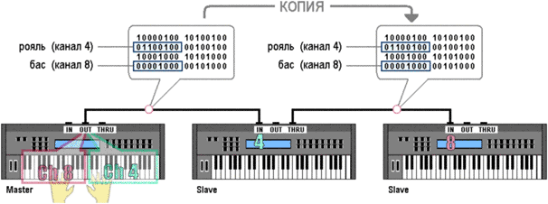
Возможности живого исполнения нескольких партий одновременно ограничены, поэтому чаще всего партии записываются в секвенсор по очереди. Причем записать партии можно на простом и неказистом по звучанию инструменте — ведь записывается не звук, а только действия исполнителя (можно даже настучать партию на MIDI-клавиатуре без подзвучки). А для сведения одолжить пару качественных синтезаторов или звуковых модулей.
Каждый синтезатор при наличии выхода MIDI Thru обязан дублировать на него всю приходящую информацию, в том числе и по тем каналам, на прием которых он сам настроен. Это позволяет передавать партию дальше, на другие синтезаторы, настроенные на тот же канал, для создания, например, жирного звучания в унисон.
MIDI — протокол реального времени
Это означает, что вся система работает по принципу "получил — выполнил". Исполнитель нажимает клавишу, клавиатура генерирует сообщение "взять ноту" и передает его на вход тон-генератора. Тон-генератор немедленно воспроизводит ноту. Таким образом, никакие параметры, связанные с моментами выполнения команд, в сообщениях не передаются. Моментом выполнения считается момент получения команды. Поэтому сообщения вроде "сыграть ноту через две секунды" в MIDI отсутствуют. Как это ни странно, сообщение "сыграть ноту длительностью две секунды" в системе реального времени также невозможно.
Представьте: как только исполнитель нажимает клавишу, тон-генератору посылается команда "взять ноту", и он должен немедленно начать воспроизведение. Какой длительности будет нота, тон-генератор не знает и не может знать. Здесь все зависит от исполнителя — нота будет звучать до тех пор, пока тот не отпустит клавишу, и в тон-генератор не поступит команда "снять ноту". Вот теперь можно сказать — нота звучала полторы секунды. В MIDI все параметры, связанные со временем протекания того или иного процесса, ведут себя аналогично. Например, темп задается не каким-нибудь сообщением "120 ударов в минуту", а самими сообщениями о взятии ноты, приходящими от устройства управления в соответствующем темпе.
Таким образом, задача тон-генератора в MIDI существенно упрощается: не нужно отслеживать время чего-либо, нужно только сразу реагировать на команды. Отсюда — одна из самых распространенных проблем MIDI, так называемые зависшие ноты. Если в тон-генератор пришло сообщение "взять ноту", а сообщение "снять ноту" по каким-либо причинам не пришло (например, из-за обрыва кабеля), нота будет звучать вечно. Ну, или до тех пор, пока не перезапустить тон-генератор.
В общем, получается, что временем звучания нот, темпом, и другими временнЫми моментами управляет сам исполнитель. Если мы хотим записать действия исполнителя, нужно каждое MIDI-сообщение, поступившее в секвенсор, снабдить меткой времени. Примерно так: сообщение "взять ноту" поступило на первый тик. Записываем его в память вместе с меткой 1. Сообщение "снять ноту" поступило на двадцать первый тик, записываем его с меткой 21. Если секвенсор отсчитывал двадцать тиков в секунду, то, очевидно, длина записанной ноты — одна секунда. При воспроизведении секвенсор начинает снова отсчитывать тики. Подошел первый тик, в тон-генератор отправилось сообщение о взятии ноты, подошел 21-й тик — о снятии ноты. Таким образом, мы записали, а затем воспроизвели действия исполнителя.
Кроме того, секвенсор позволяет те же действия запрограммировать, то есть записать в память без необходимости живого исполнения. Такое программирование в свое время дало жизнь множеству стилей электронной музыки и в корне изменило творческий процесс, но это — предмет отдельного разговора.
Компоненты MIDI
Понятия, затронутые выше, также требуют подробного обсуждения, но уже сейчас ясно, из чего должен состоять протокол. Очевидно, для того, чтобы одно устройство реагировало на управляющие воздействия с другого, нужно стандартизировать две вещи: язык общения устройств и физический способ их соединения. Для того, чтобы сообщения можно было сохранять, а впоследствии воспроизводить, нужен также стандартный формат их хранения.
Протокол MIDI состоит из трех частей: спецификации формата данных, аппаратной спецификации интерфейса и спецификации формата хранения данных.
Начнем разговор о MIDI с первой части, то есть с языка, на котором общаются устройства.
Язык MIDI
Для управления одним устройством с другого нужно придумать язык команд, понятный им обоим. То есть составить список команд, обозначить каждую команду своим кодом и договориться: если устройство понимает команду, оно должно на нее реагировать так-то и так-то, если не понимает — игнорировать.
Язык MIDI состоит только из команд управления и параметров этих команд. Ничего другого по MIDI-кабелю не передается. Любые, даже такие непростые музыкальные моменты, как, например, игра баса легато с "подъездом" к каждой ноте на сильной доле такта, — это всего лишь результат обработки команд тон-генератором. Команды в языке MIDI называются сообщениями.
Сообщения логично разделить на два основных типа: одни управляют звукообразованием, то есть говорят, например, какую ноту и как громко играть, вторые выполняют служебные функции, вроде изменения настроек тон-генератора и синхронизации. Поскольку извлечение звуков происходит в MIDI на определенном канале, сообщения первого типа называются сообщениями канала (Channel Messages). Сообщения второго типа называются системными (System Messages). Сообщения канала всегда относятся к какому-либо MIDI-каналу и обрабатываются тон-генератором только в том случае, если он настроен на прием данного канала. Выше говорилось, что соединение нескольких тон-генераторов через разъем MIDI Thru, при соответствующих настройках инструментов, позволяет передавать "каждому свое". Системные сообщения предназначаются всем устройствам в MIDI-системе, независимо от того, на прием каких каналов они настроены.
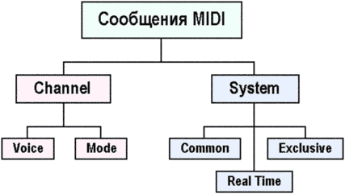
Сообщения канала делятся, в свою очередь, на голосовые (Channel Voice Messages) и сообщения режима канала (Channel Mode Messages). Системные сообщения делятся на общесистемные (System Common Messages), сообщения реального времени (System Real Time Messages) и эксклюзивные (System Exclusive Messages).
Голосовые сообщения канала посылают в тон-генератор информацию об управлении звуком. Они "докладывают" тон-генератору о том, что сейчас делает исполнитель — нажимает клавишу, крутит колесо модуляции, двигает фейдер или отпускает педаль. То есть голосовые сообщения описывают действия исполнителя в цифровой форме. Тон-генератор, получая эти сообщения, анализирует их и реагирует на них примерно так: "Ага, это нажатие клавиши До первой октавы — нужно воспроизвести ноту; это поворот звуковысотного колеса — нужно сместить у ноты высоту тона; а это — неизвестное мне сообщение, ничего делать не буду".
Тон-генератор может работать в нескольких режимах (о них поговорим далее), и в каждом режиме он реагирует на голосовые сообщения по-разному. Сообщения режима канала как раз и нужны для переключения этих режимов, но они выполняют и еще несколько полезных действий.
Общесистемные сообщения выполняют несколько разнородных задач. В их числе — синхронизация MIDI- и аудиоустройств (например, магнитофонов) посредством протокола MIDI Time Code (MTC), передача позиции песни, выбор песни и даже запрос на подстройку осцилляторов синтезатора.
Системные сообщения реального времени предназначены для синхронизации MIDI-устройств, например, секвенсоров и драм-машин, по протоколу MIDI Clock. Сюда же входят сообщения начальной инициализации ("сброса") устройства и предотвращения некорректной работы (выключения зависших нот). Сообщения реального времени отличаются от всех других тем, что имеют наивысший приоритет передачи, то есть, например, легко могут вклиниться между частями другого сообщения. Это и понятно — ритмическая точность дороже всего.
Системные эксклюзивные сообщения (обозначаемые для краткости SysEx) — это своеобразная палочка-выручалочка для производителей устройств. Сегодня на рынке существует множество типов оборудования, и каждый конкретный прибор имеет свои специфические возможности. Организации MMA и JMSC могли пойти по пути постоянных обновлений спецификации MIDI: появилась какая-то новая функция, скажем, в дымовой машине — выделить под нее новое сообщение и занести в стандарт. Понятно, что это тупиковый путь. За всем не уследишь, а абсолютной совместимости между устройствами все равно не добиться (да и какая совместимость может быть у дымовой машины и синтезатора?). Поэтому было решено дать возможность каждому производителю определять свои собственные (эксклюзивные, исключительные) сообщения, даже под конкретное устройство.
Представьте, что, например, фирма Roland выпустила новый звуковой модуль с необычной функцией. Для управления этой функцией нет стандартного голосового сообщения, предусмотренного спецификацией MIDI. Что делает фирма Roland? Она придумывает свое эксклюзивное сообщение, с помощью которого и происходит управление функцией. Для того, чтобы эксклюзивные сообщения одних фирм не мешали другим, каждый производитель получает свой уникальный идентификатор и использует его в заголовке сообщения. Так что звуковой модуль, скажем, фирмы Yamaha, увидев в заголовке сообщения SysEx идентификатор Roland, говорит себе: "Так, это не для меня, я тут все равно ничего не пойму, пропускаю все сообщение".
Несколько сообщений SysEx являются универсальными и поддерживаются устройствами разных производителей. Эти сообщения применяются для настройки таких параметров тон-генератора, как общая громкость и панорама, а также для реализации дополнительных протоколов в рамках MIDI, например, протокола передачи семплов (MIDI Sample Dump Standard), управления сценическим светом и пиротехническими устройствами (MIDI Show Control), управления транспортными функциями оборудования (MIDI Machine Control).
Ну вот, разобрались с тем, какие сообщения бывают. Теперь пора выяснить, как их передавать. Понятно, что каждому сообщению нужно присвоить свой код, однако прежде чем перейти к этому, необходимо четко представлять, как хранится информация в цифровых устройствах.
Системы счисления
Мы не будем здесь учиться программировать или складывать двоичные числа в столбик. Первое музыканту не обязательно, а второе проще делать на калькуляторе.
На самом деле, чтобы разобраться в протоколе MIDI, вовсе необязательно иметь математический склад ума. Нужно только базовое представление о способе хранения чисел в компьютере. Если однажды в секвенсоре вы увидели окно SysEx с кучей непонятных букв и цифр, и рефлекторно закрыли его, то этот раздел для вас. Попробуйте изменить свое отношение к этим значкам, а еще лучше — почитайте руководство пользователя к инструменту и попробуйте эти значки на практике. Вы увидите, что они обладают огромной силой.
Как же хранится информация в цифровых устройствах? Логично предположить, что раз "цифровые", то в виде привычных для нас чисел. Люди используют десятичную систему счисления, возникшую благодаря пальцевому счету — числу пальцев на обеих руках. У нас есть десять различных знаков (цифр), с помощью которых мы можем представить любое число. Если бы у нас было по три пальца на каждой руке (какой ужас), мы бы наверняка пользовались шестеричной системой счисления. И выражали бы любые числа, используя шесть цифр — 0, 1, 2, 3, 4, 5.
У цифрового устройства пальцев нет совсем, а есть только электрические элементы, которые могут находиться либо во включенном, либо в выключенном состоянии. Можно представлять себе такой элемент в виде конденсатора, который либо заряжен, либо разряжен. Программисты договорились, что одно состояние конденсатора будет обозначаться цифрой 0, а другое — 1. Могли бы использовать буквы A и B, суть от этого не изменилась бы. Итак, на все нам даны две цифры, и поэтому система счисления в цифровой технике — двоичная. Цифры в двоичной системе обычно называют битами (от англ. bit — binary digit). Также битом называют простейшую, неделимую область памяти (тот самый конденсатор), в котором хранится какая-либо из цифр двоичной системы. По сути, бит — это минимальная единица информации. Не стоит путать этот "бит" с музыкальным термином, звучащим по-русски аналогично, но обозначающим "удар" (от англ. beat).
Итак, бит принимает только два значения — обычно 0 и 1, хотя эти цифры условны. Например, бит может показывать логическое состояние "да/нет", наличие или отсутствие жесткого диска в семплере, или, скажем, тип дороги — асфальтовая или грунтовая. Понятно, что многие явления двумя состояниями не описать, а числа одним битом не выразить. Для этих целей применяется набор битов. Например, посчитаем в двоичной системе до восьми, и посмотрим, сколько битов (простейших ячеек памяти) нужно для представления чисел (рис. 9):
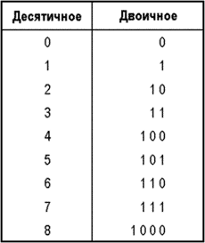
Нетрудно заметить: максимальное число, которое можно записать, располагая N битами, равно 2N-1. Действительно, двумя битами можно выражать числа до 3, тремя до 7 и так далее.
Для удобства доступа к данным в цифровой технике биты объединяются в группы. Самая распространенная и всем знакомая группа битов — байт. Байт состоит из восьми битов. Биты нумеруются справа налево — нулевой бит всегда находится справа и называется младшим значащим разрядом (LSD, Least Sign ificant Digit). Самый левый бит называется старшим значащим разрядом (MSD, Most Significant Digit), рис. 10. Получается, что в одном восьмибитовом байте могут храниться значения от 0 до 255 (28-1), то есть всего 256 значений. Если нужно хранить числа больше 255, используются два байта (машинное слово, 16 бит), диапазон значений от 0 до 216-1 (65535), четыре байта (двойное слово, 32 бита) — от 0 до 232-1 (4294967295), и так далее. Заметьте, что число бит, используемых для хранения числа, всегда кратно восьми. Даже если для представления числа достаточно 9 бит, используются два байта. Группы байт объединяются в соответствии со степенями двойки: 2, 4, 8, 16 и так далее. Так что трехбайтовая величина (24 бита) в памяти машины все равно занимает 4 байта, старшие восемь бит просто не используются. Такое расточительство ресурсов связано с особенностью архитектуры микропроцессоров.
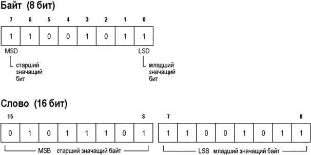
В протоколе MIDI значения параметров обычно ограничены двухбайтовым словом. Биты с 0 по 7 составляют младший значащий байт слова (LSB, Least Significant Byte), с 8 по 15 — старший значащий байт (MSB, Most Significant Byte).
Двоичные числа очень громоздки в записи и удобны, пожалуй, только для электронных "мозгов": например, число 35935 в двоичной системе будет выглядеть как 1000110001011111. Перевести такое число в десятичное без калькулятора проблематично, как, впрочем, и получить его из десятичного. Поэтому для облегчения жизни программисты придумали шестнадцатеричную систему счисления. В ней числа представляются с помощью цифр и букв: цифры — привычные для нас, от 0 до 9, а буквы — от A до F. Например, в десятичной системе число "десять" записывается как 10, а в шестнадцатеричной — как A. Значение F соответствует десятичному 15.
Важно понять, что компьютеру абсолютно все равно, как мы там называем числа — цифрами, буквами или точками с тире. На физическом уровне есть только электрические элементы, способные находиться в одном из двух состояний. А то, что в компьютерном мире и, в частности, в протоколе MIDI используются именно шестнадцатеричные числа, вызвано удобством их перевода в двоичные, то есть на язык компьютера, и обратно.
В самом деле, максимальное число, которое можно представить одним шестнадцатеричным знаком (F, десятичное 15), равно максимальному числу, которое можно представить четырьмя битами (24-1). Максимальное число, которое можно представить двумя шестнадцатеричными знаками (FF, десятичное 255), равно числу, которое можно представить восемью битами (28-1). И так далее. Получается, что каждые четыре бита двоичного числа соответствуют одному разряду шестнадцатеричного (24 = 16). Следующая таблица (рис. 11) показывает соответствие между двоичными, десятичными и шестнадцатеричными числами.
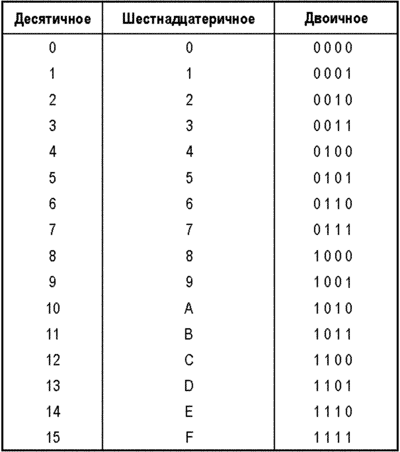
С помощью нее можно быстро, без калькулятора, выполнять преобразование двоичных чисел в шестнадцатеричные и обратно. Работая с MIDI даже на уровне пользователя, такие преобразования иногда приходиться выполнять. Например, преобразуем наше число 35935 из двоичного вида (1000110001011111) в шестнадцатеричный. Первая четырехбитная группа справа — 1111, соответствует шестнадцатеричному F. Вторая группа (0101) — 5, третья (1100) — С, последняя (1000) — 8. Итак, десятичное 35935 в шестнадцатеричном виде выглядит как 8C5F. Аналогично, число D7 записывается в двоичном виде как 11010111.
Преобразования двоичных и шестнадцатеричных чисел в десятичные и обратно проще выполнять на калькуляторе.
Для того, чтобы отличать в тексте шестнадцатеричные числа от десятичных, используются разные методы. Я буду использовать синтаксис языка программирования Си и обозначать шестнадцатеричные числа префиксом "0x". В нашем примере 35935 = 1000110001011111 = 0x8C5F.
Принцип кодирования сообщений
Очевидно, сообщение должно состоять из двух компонентов: первый описывает тип сообщения, то есть отвечает на вопрос "что надо делать", второй — уточняет действие и отвечает на вопрос "как надо делать". Например, при нажатии клавиши первый компонент сообщает тон-генератору "взять ноту", а второй уточняет: "Эта нота — До малой октавы". В некоторых случаях уточняющий компонент не нужен, например, в системном сообщении реального времени, останавливающем секвенсор, достаточно одного компонента, который говорит "стоп".
Компоненты сообщений в протоколе MIDI представлены байтами. Компонент, описывающий тип сообщения, называется статус-байтом, компонент, уточняющий сообщение — байтом данных. Если уточняющей информации много, она может быть представлена несколькими байтами данных. Таким образом, каждое MIDI-сообщение состоит из одного статус-байта и, если необходимо, одного или нескольких байтов данных. Передаются эти сообщения по MIDI-кабелю в том же порядке — сначала статус-байт, затем байты данных. Количество байтов данных жестко закреплено за каждым сообщением. Так что, если, например, тон-генератор получил статус-байт "нажата клавиша", он ждет за ним два байта данных, первый из которых содержит номер нажатой клавиши, второй — скорость нажатия.
Для системных эксклюзивных сообщений сделано исключение — их длина жестко не задается. Она определяется специальным статус-байтом, который помещается в конец сообщения.
MIDI-сообщения — это поток данных в реальном времени. При передаче данных иногда могут происходить их потери и прочие неприятности. В компьютерных сетевых протоколах, в случае прихода испорченных данных (что проверяется по контрольной сумме) происходит повторный запрос к серверу до тех пор, пока данные не придут в целости и сохранности. В протоколе MIDI такая возможность отсутствует (по крайней мере, при передаче голосовых сообщений), и приемник всегда находится в пассивном состоянии по отношению к передатчику. Что принял, то принял.
Отсюда вывод: необходимо сделать так, чтобы приемник в любой момент мог отличить статус-байт от байта данных, без всяких подсчетов и необходимости синхронизации с передатчиком. Для этого в протоколе MIDI каждый статус байт содержит в старшем значащем разряде единицу, а каждый байт данных — ноль. Так что один бит из байта расходуется по служебной необходимости. Для кодирования сообщений и передачи данных остаются только семь бит. Отсюда — фундаментальное число 128, пронизывающее насквозь весь протокол. Семью битами можно представить только 128 различных значений (от 0 до 127, 27-1). Именно поэтому в MIDI 128 нот, 128 уровней динамики и так далее.
Стало быть, и в статус-байте можно закодировать 128 сообщений. Разработчики протокола могли так и сделать, но поступили иначе, и этим во многом объясняется гибкость и живучесть MIDI. Во-первых, 128 сообщений рано или поздно окажется недостаточно, во-вторых, в каждом сообщении канала нужно передавать номер канала, которому адресовано сообщение. Под номер канала придется отводить один байт данных, что не рационально — сообщения канала используются в MIDI гораздо активнее системных, а если к каждому такому сообщению будет "пришит" дополнительный байт, это намного снизит пропускную способность MIDI. К тому же каналов всего 16, и для их представления достаточно четырех бит. Поэтому было решено кодировать номер канала в младшей половине статус-байта (рис. 12)
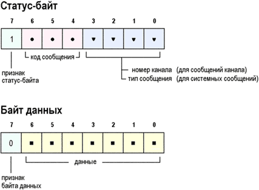
Получается такая картина: старший бит статус-байта занят, так как должен всегда содержать единицу, четыре младших байта — тоже, так как содержат номер MIDI-канала. На кодирование типа сообщения остается всего три бита, которыми можно закодировать восемь сообщений. Семь из них отвели под сообщения канала, а последнее, все биты которого единичные (111), сделали признаком системного. Системные сообщения не требуют номера канала, поэтому младшие четыре бита статус-байта могут быть использованы для кодирования конкретного типа сообщения (всего их получается 16).
Тон-генератор анализирует полученный байт примерно по следующей схеме. Если его старший бит равен нулю — это байт данных и младшие семь бит нужно рассматривать как числовой параметр. Если старший бит равен единице — это статус-байт, и тогда три бита после него отражают тип сообщения. Если эти три бита единичные, сообщение системное, какое именно — задается младшими четырьмя битами. В противном случае — это сообщение канала, и тогда младшие четыре бита задают номер канала. Все это может показаться сложным для человека, но компьютер работает с битами "на ура" и вышеуказанную процедуру выполняет за доли микросекунды.
Однако, что же получается: вместо 128 возможных сообщений мы можем закодировать только семь голосовых и шестнадцать системных? Да, именно так. Системных сообщений, в принципе, достаточно, а вот все голосовые в семь штук явно не уложишь. Поэтому разработчики MIDI применили многоуровневый метод кодирования. Но об этом поговорим в следующий раз.
Август 2003